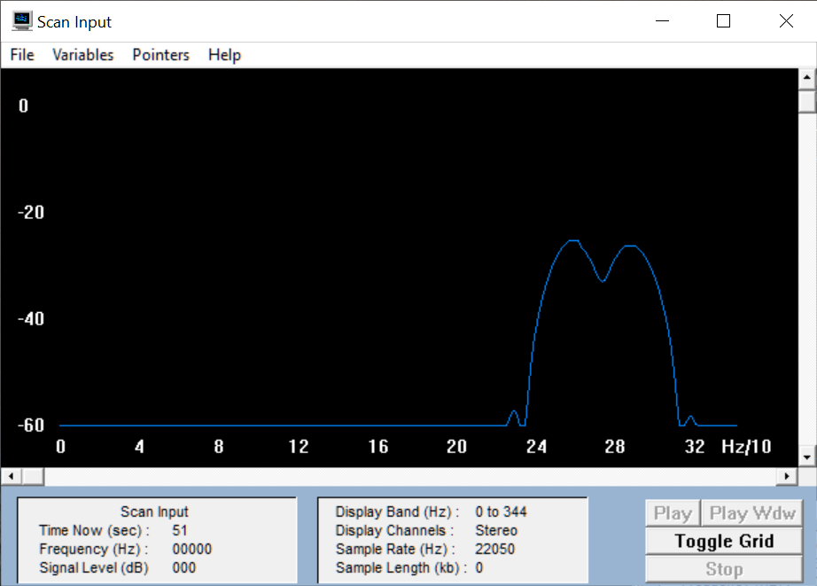

Zunächst brauchen wir nur die oben beschriebenen
Module. Wir schauen uns die Wellenformen der Grundklänge des Oszillators an
(Sägezahn, Rechteck, etc.). Wir können nun Beispiele der einzelnen Klänge durch
Drücken einer Taste spielen und mit dem Recorder aufzeichnen. Wie man das RecorderPlugin aktiviert, zeige ich im Übungstermin! Man benötigt dafür einen (kostenfreien)
VCVRack-Account.
Wellenformen der Grundklänge
sinus:
dreieck:
sägezahn:
rechteck:
Aufgabe 2: Spektrum anzeigen
Außerdem lässt sich in GRAM oder Praat das Spektrum anzeigen. In GRAM wählen
wird den Display-Type "Line". Es erscheint eine Liniendarstellung des
Amplitudenspektrums mit dB-Angaben (Toggle Grid). Aus diesen können wir dann lineare
Prozentwerte mit Bezug auf die Grundschwingung berechnen. Wir setzen dazu die
Amplitude der Grundschwingung mit 0 dB entsprechend 100 % an. Bei der Square-Welle
variieren wir die Pulsweite, d.h. das zeitliche Verhältnis zwischen positivem und
negativem Schwingungsteil, mit dem Regler P-WIDTH am Oszillator) und beobachten, wie
sich das Verhältnis der Obertöne verändert. Dazu betrachten wir drei Fälle: 50/50, 30/70
und 10/90 zwischen positivem und negativem Teil, ablesbar am Oszilloskop.
(Ins Ergebnisprotokoll: Bilder der Spektren für drei markante P-Width-Einstellungen beim
Rechteck, ein Sägezahn, ein Dreieck, Ausschnitte aus den wavs, Angaben der
Frequenzen und Amplituden in dB und Prozentwerten für die Grundschwingung und die
ersten drei Obertöne, bei denen die Amplitude größer 0 ist).
Nun bringen wir einen zweiten Oszillator zum Einsatz. Um die Ausgänge der
beiden Oszillatoren anschließen und in der Lautstärke regeln zu können, benötigen wir ein
MIXER-Modul, das wir zwischen die beiden VCAs und AUDIO schalten.
Zunächst stellen wir beide Oszillatoren auf exakt dieselbe Frequenz und
Dreiecksschwingung. Dann verstimmen wir den zweiten gegen den ersten und zeichnen
den Klang auf, wenn wir gerade eine Amplitudenmodulation feststellen (Fall A), d.h. einen
in der Lautstärke schwankenden Ton. Wir verstimmen die Oszillatoren weiter
gegeneinander, bis wir den Eindruck einer Dissonanz haben (Fall B), d.h. es entsteht ein
rauer, unangenehmer Klang.
Beachte, dass der Regler 'FREQ' den betreffenden Oszillator in etwa um Halbtöne
verstimmt, während 'FINE' dies um Bruchteile von Halbtöne tut. Am besten experimentiert
man zunächst mit dem 'FINE'-Regler und erst, wenn z.B. bei Fall B sich der gewünschte
Effekt nicht einstellt, mit dem 'FREQ'-Regler.
Nun stellen wir mit GRAM für die beiden Fälle die Mittel- und Differenzfrequenzen der
Schwingungen fest. Es kann sein, dass die Genauigkeit von GRAM beim Fall A zur
Bestimmung der Differenzfrequenz nicht ausreicht. Man kann die Differenzfrequenz aber
auch aus dem Oszillogramm der amplitudenmodulierten Schwingung berechnen (z.B. in
Samplitude anschauen). Die Periodendauer der Differenzfrequenz entspricht nämlich exakt
dem Abstand zwischen zwei Punkten maximaler (oder minimaler) Amplitude. Ins
Ergebnisprotokoll für beide Fälle: Mittenfrequenz und Differenzfrequenz, Spektrogramm
und wav.
Video Frequenzmodulation
Zur Veranschaulichung der Aufgabe:
Fall A
regulär
modifiziert
Mittelfrequenz
Differenzfrequenz
Oszillatoren mit derselben Frequenz
261,63
261,81
261,72
0,18
Fall B

regulär
modifiziert
Mittelfrequenz
Differenzfrequenz
Dissonanz
260
290
275
30
Aufgabe 4: Klangnachbildung
Wir wollen nun versuchen, selber einen interessanten Klang zu
kreieren. Die einzigen Anforderungen sind, dass wir dazu die Taste Y drücken, und dass
es ein monophoner Klang ist, d.h. dass nur eine Taste gedrückt wird und eine Note
erklingt. Zunächst wählen wir die Grundwellenform (Rechteck, Sägezahn, etc.), die
klanglich am besten zu unserem Instrument passt. Um die Hüllkurve entsprechend
manipulieren zu können, brauchen wir ein ADSR-Modul („Envelope“), das wir zwischen
dem Ausgang GATE des MIDI-Moduls und EXP Eingängen der VCAs einbauen.
Damit versuchen wir zunächst den zeitlichen Verlauf einzustellen.
Wir haben versucht eine Mundharmonika nachzubilden: